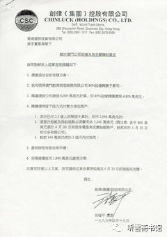
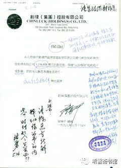
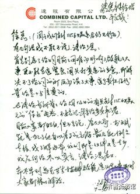
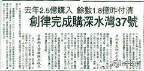
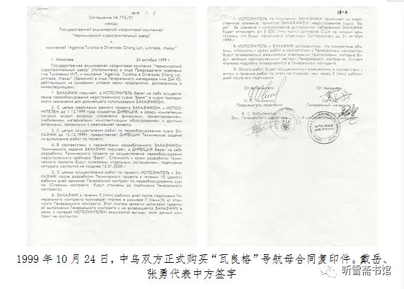
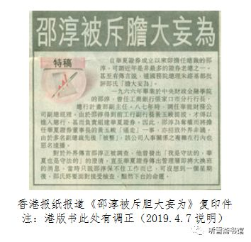
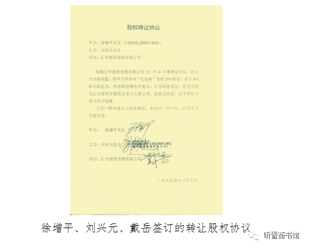
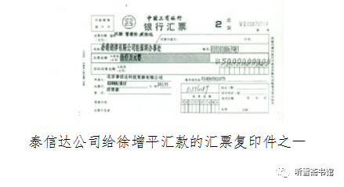
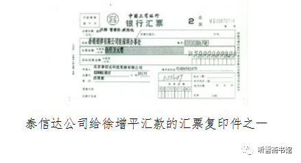

附录一：本书正文中涉及的有关文件
一、采访徐增平提纲
《“瓦良格”号航母来中国》需要补充的材料
1、目前网上有不少关于你当初买“瓦良格”起因的说法。《南华早报》说：“这是徐增平首次向媒体承认，他是授命于海军前往乌克兰去执行这项‘不可能的任务’，并且亲自详细（介绍）他是如何布署航母购案的种种细节。”报道说，你是受了贺鹏飞和姬德胜的委托。这两个当事人，一个死了，一个被判刑。姬德胜不能出来说话，或者说没有资格出来说话，怎么证明你说的情况属实？这一点很重要，如果没有可以证明的东西，就不会有人相信。
2、你与贺鹏飞见面都是什么人联系的？是什么时间？在什么地方？谈了什么？他是否明确委托你来办此事？我在海军前司令员张连忠处，看到一张你与贺鹏飞的合影，那次是第一次见面么？什么时间？你们一共见过几次面？据媒体说，贺鹏飞从1996年就开始与你交往，从1996年4月到1998年2月，两人会面约十几次。是这样么？你们都是谈“瓦良格”的事情？有个材料说，到1998年底，你们再没见面，为什么？。
3、有报道说，徐增平说：“姬胜德是这起交易背后的真正老板。贺鹏飞、姬胜德和多名军官因为爱国，为了中国的强军梦，他们为这起航母交易做了大量前期工作。”
你既然说是“授命于海军”，怎么姬胜德又成了“真正老板”？
4、你买“瓦良格”最初的动机是什么？你对《南华早报》记者说：“我必须不惜代价把它买回去给我们的海军。”这个有点演绎吧？据报道，你向国家要价32亿人民币，是这样么？
5、你和邵淳是什么时候见面的？华夏证券公司的钱是怎么弄到香港的？后来为什么邵淳把你从澳门创律公司踢出来了？
6、有个材料说，你找澳门一个很有路子的人办各种手续，花了很多钱。有人说，在澳门办公司很简单，根本不用花那么多钱，你那样说的目的是为了向国家多要钱。对此，你怎么看？
7、《南华早报》说，你曾在1997年亚洲金融危机后投资2.1亿港元买下有“港版凡尔赛宫”之称的深水湾37号山顶豪宅而享誉一时。有人说，你挪用华夏证券公司买航母的钱在香港买了豪华别墅，并在香港报纸上登报宣称你有钱。这也是后来他们把你踢开的原因。有这回事么？
8、有人说，“瓦良格”拖到大连以后，你在香港联络了一些小老板，说要带他们去大连看航母，并收了一些费用，结果到了大连只能隔着海湾看一眼，他们有一种上当受骗的感觉，回到香港以后，在香港的报纸上发表文章揭露此事。有这事么？
9、有报道说：你把20吨（也有说40吨的）“瓦良格”图纸运回来了。我采访中船重工集团和海军装备部门的人，他们都说没有看到你买的图纸。戴岳和张勇1999年8月到黑海造船厂，看到这些图纸还在仓库里；大连造船厂副厂长唐士源2000年5月到黑海造船厂，看到这些图纸还在仓库里。乌方曾提出400万美元卖给我们，当时因为中船重工的任务是把船拖回来，他们向时任国务院副秘书长马凯汇报，马凯让他们找总装，总装因为没有中央的旨意，不敢动用军费，错失良机。那20吨图纸的事，总不会是记者编的吧？
10、很多媒体说：澳门创律公司的博彩许可证已于“瓦良格”号靠泊大连的当天被吊销。这个证是你办的么？有人说根本就没有这个博彩证，到底有没有？
11、有人说你是赌徒，在“瓦良格”这盘赌局上几乎输得精光，是国家救了你。你怎么看这种说法？
12、有人说，你被逐出澳门创律公司领导层以后，人家要收公司文件和公章，你刻了一枚小的公章交给张勇。此事是否属实？若确实如此，你当时是什么想法？
13、有媒体报道，1998年11月11日（第445期）新华社“内参”刊登新华社香港分社记者写的文章《徐增平表示购买前苏联航空母舰服务国家》，我觉得在那个时候，那种政治背景下，新华社发这种“内参”是“触雷”行为，不大可能。所以我托人去查了，查到新华社香港分社记者刘史忠当时写的消息，只有400字，题为《澳门创律旅游娱乐公司宣布将改装航母为超级海上娱乐城》，这个消息内容比较靠谱。
14、购买“瓦良格”的钱明明是华夏证券公司出的，共计3.6亿元（前期2.3亿元，后期1.3亿元），为什么你在接受媒体采访时，一直不提华夏证券公司，也不提邵淳董事长的名字？
15、“瓦良格”离开黑海造船厂的时间是2000年6月14日，可你对媒体说的时间是1999年7月。是不是因为在1999年8月3日澳门创律公司高官层改组，你不再有公司话语权了，所以将“瓦良格”离开黑海造船厂的时间改到了你有话语权的时段？
16、《南华早报》说，在调研、洽谈和购买航母等环节上，你前前后后一共花了1.2亿美元。这个数字准确么？是你说的，还是他们乱写的？如果是你说的，能否开一个单子一项项说明？据我掌握的资料，华夏证券公司为“瓦良格”项目花了3.6亿元人民币（包括被你挪用的大约1.8亿人民币），折合美金4400万，你交订金200美元，中船重工后来花了3000万美元，共计7600万美元，不超过8000万美元。我算得对么？
17、国家收购“瓦良格”，一共支付8.78亿元，华夏证券公司按照你和庄立祥持有的澳门创律公司20%股权，扣除你之前的借款和利息，一共分给你们1.2亿元人民币。你嫌少，一直未去领取，至今还存在一个“影子公司”帐户上，是这样吧？
最后说明：我提的问题可能比较尖锐，但希望你能够理解。我在写中国航母的历史，我得向历史负责，不能伪造和掺假，我必须弄清那些不明白的问题。如有冒犯，我只能表示歉意。
2015年5月15日
注：这个采访提纲中的有些问题现在已经清楚，有些还不清楚，如果徐增平先生愿意接受采访，请予以说明，我将很高兴再作补充。
二、不合时宜、内容虚假的“内参”（选自网络）
境内外媒体广泛引用的1998年11月11日（第445期）新华社“内参”。全文如下：
徐增平表示购买前苏联航空母舰服务国家
新华社香港讯 香港创律集团有限公司向乌克兰购买的前苏联航空母舰“瓦良格”号，预计11月中旬从基辅启航驶往澳门。创律集团主席徐增平向记者表示，购买这艘航空母舰的目的是“以商业行为之名，行服务国家之实”，希望对国家在政治、军事、经济等方面有所贡献。
“瓦良格”号是前苏联时期开始在基辅造船厂建造的，排水量76000吨，实际超过8万吨，是世界上仅次于美国尼米兹级的航空母舰。苏联解体后，俄罗斯由于经济困难，无法继续向基辅造船厂提供资金，建造被迫中止。乌克兰政府最后决定在国际上公开招标拍卖这艘尚未完工的航空母舰。
据徐增平介绍，1997年上半年，他听中央领导曾经探讨过购买这艘航空母舰的问题，但最后决定放弃投标购买。徐增平了解到这个情况后，陷入了很长时间的思考。他认为中国因为种种考虑不买这艘航空母舰当然可以理解，但一定不能让它落到其他国家、尤其是对中国有敌意的国家手中。
徐增平说，目前世界上“中国威胁论”的论调仍然有相当的市场，美国等世界强国骨子里仍然希望“遏制中国”，一些周边国家对中国仍然有戒心。“在这种情形下，有创律出面购买航空母舰并用于商业用途，那些国家很难把这笔‘帐’记到中国头上，难以公开指责中国扩充军备；但与此同时，这艘航空母舰的存在，对台湾和一些不断制造麻烦的国家又始终是一种心理上的威慑。达到这种政治上的效果，应该说比较理想的。”
据徐增平介绍，创律在这艘航空母舰的国际招标中中标后，已经引起国际的注意。美国广播公司在晚间新闻中用5分多钟作了专题报道，进行各种猜测，报道始终无法指责中国，却认为潜在的军事意义很大。台湾中央社多次报道，台湾当局也多次对有关这艘航空母舰的问题发表谈话，可见他们心理上紧张。一个拥有台湾背景的商业结构曾经多次试图接触创律，表达出想用高价收购这艘航空母舰的强烈愿望。
徐增平认为，由创律出面、以商业用途为名购买这艘航空母舰，军事上的意义非常大。“从眼前看，中国当然不会马上装备航空母舰。但从长远看，中国作为一个海洋大国，以及今后作为一个世界性的强国，无论是为了保卫边疆还是为了在国际事务中有足够的‘发言实力’，装备航空母舰是迟早的事情。那么，创律拥有‘瓦良格’号后，一旦中央认为时期成熟需要装备，就随时可以利用现成的母舰船身，或者加以改装和全面装备，或者用拆船等方式了解航空母舰的制造技术。这样的话，等于无形中为中国海军装备航空母舰做好了基础准备，也赢得了时间和技术。
据徐增平介绍，创律在购买这艘航空母舰时，已经购得它的全部30多万张设计图纸，这将可以为中国未来建造航空母舰争取时间。只要国家需要，创律可以随时提供这些图纸。
“当然还有一个意义是经济意义”。徐增平说，现在国家国力还有限，在集中力量搞经济建设的方针下，军费也相当紧张，因此要让国家一下拿出上亿美元去购买“瓦良格”号，经济压力很大也不合算。现在除了投资8000万美元买到了实际造价已经超过10亿美元的“瓦良格”号，对国家的经济意义显然也是相当可观的。
据徐增平介绍，“瓦良格”号到达澳门后，将立即进行装修，改建成综合性的海上游乐设施，包括海上军事博物馆，酒店，餐厅，文化游乐和博彩等等，预计整个改装投资将超过2亿美元。这样安排，一方面是为了切实保持“商业用途之名”，另一方面是为了通过经营活动获得维持这艘航空母舰的基本费用。“一旦国家需要，我和创律将毫不犹豫向国家献出这艘航空母舰，为国家服务。这才是我的最终目的”。（记者吴明）
本书作者注：航母“从基辅启航驶往澳门”，这显然是一个常识性的错误。基辅是乌克兰首都，不是造船厂啊！
三、1999年4月19日徐增平同意出让澳门创律公司80%股权的函
关于澳门创律公司股权及乌克兰购船事宜
香港达程投资有限公司
吴宇董事长阁下：
我司对解决上述事宜提议如下：
1、搁置过往全部有关方案。
2、我司现将澳门创律旅游娱乐有限公司80%转让予贵司。
3、转让价按公司总值6,000万美元计算，即80%股权转让价为4,800万美元。
4、转让价将按下述方式付双方指定账户：
⑴、其中已付2.3亿人民币按9计算，即作2,556万美元计；
⑵、直接付船厂及拖船启动必须费用共计1,300万美元（请注意：其中800万美元须于4月20日前直接电汇乌克兰船厂账户，余款则于4月30日前付各有关公司）；
⑶、余款944万美元将于3个月内付我司。
5、尽快办理有关法律手续。
6、另商补偿我司1,000万美元处理方案。
如贵司同意以上方案，我司担保并负全责将船只在4月30日前拖离乌克兰。
谨此
创律（集团）控股有限公司
徐增平 总裁（手书签字）
一九九九年四月十九日
- 
- 徐增平同意出让澳门创律公司80%股权的函复印件
四、1999年5月14日徐增平的借款保函
保 函
本人徐增平对澳门创律旅游娱乐有限公司交付新加坡快捷船务有限公司1,156,938美元的款项后，保证“瓦良格”号启航决不受影响，否则本人愿意承担全部责任。
特此保函
创律（集团）控股有限公司
徐增平 总裁（签名）
一九九九年五月十四日
- 
- 徐增平签字的保函复印件
五、1999年5月26日张勇致徐增平催促函：《关于我们支付115.6万美金后仍无行动》
- 
- 张勇致徐增平催促函复印件
六、1999年5月29日香港报纸关于徐增平购买豪宅的报道
去年2.5亿购入 余数1.8亿昨付清
创律完成购深水湾37号
［本报讯］去年底以二亿五千万售出深水湾道三十七号的独立大屋，乐声电子执行董事谭学林指出买家已于昨日在最后限期完成交易，据中资背景创律集团徐增平正式入主这座由港版凡尔赛宫之称独立大屋。
乐声电子发展深水湾道三十七号，于去年十二月推出市场招标求售，最终由创律集团主席徐增平于十二月初截标前成功购入，作价二亿五千万元，当中买家已于今年初之前分期支付七千万元，余数一亿八千万元需于昨日完成交易。
据悉买家早前已四出处联络财务机构申请贷款，乐声电子执行董事谭学林昨日指出买家已如期完成交易，亦同时于昨日进行交楼程序。
深水湾道三十七号为一幢三层楼高新建成的洋房，占地达二万二千平方尺，洋房面积为一万六千一百四十八平方尺，折合每平方尺为一万五千四百十二元。
创律集团徐增平过往主要业务为百材贸易，近年积极作多元化发展，包括从事金融投资，酒店管理及房地产投资，于一九九七年更以数亿元购入一艘乌克兰航空母舰。
- 
- 香港报纸关于徐增平购买豪宅的报道复印件
七、1999年10月24日中乌双方正式签署编号为77501“瓦良格”号航母买卖合同
- 
- 1999年11月24日，中乌双方正式购买“瓦良格”号航母合同复印件
- 戴岳、张勇代表中方签字
- 1999年11月24日，中乌双方正式购买“瓦良格”号航母合同复印件
八、1999年12月香港报纸报道：《邵淳被斥胆大妄为》
- 
- 香港报纸报道《邵淳被斥胆大妄为》复印件注:港版书此处有调正 (2019.4.7 说明)
九、1999年12月7日徐增平转让4%股权协议复印件
- 
- 徐增平、刘兴元、戴岳签订的转让股权协议
本书作者注：协议签了，40万美元拿走了，协议却“失踪”了。最后国家并未收回这4%的股权。
十、关于“瓦良格”项目的经费使用情况
- （一）澳门创律公司方面：
- 1998年3月，徐增平支付乌克兰方面200万美元（订金）；
- （二）华夏证券公司方面：
- 1998年8月11日，通过北京泰信达公司向香港创律公司深圳办事处的账号上汇出1000万元人民币，汇票号00299829；
- 1998年8月27日，通过北京泰信达公司向香港创律公司深圳办事处的账号上汇出1000万元人民币，汇票号00000800；
- 1998年9月18日，通过北京泰信达公司给澳门创律公司汇去3000万元人民币，汇票号01161132；
- 1998年9月28日，通过北京泰信达公司给澳门创律公司汇去3000万元人民币，汇票号01161314；
- 1998年10月29日，通过北京泰信达公司给澳门创律公司汇去2500万，汇票号00873712；
- 1998年10月29日，通过北京泰信达公司给澳门创律公司汇去3000万，汇票号00873713；
- 1998年10月29日，通过北京泰信达公司给澳门创律公司汇去5000万，汇票号00873714；
- 1998年10月29日，通过北京泰信达公司给澳门创律公司汇去4000万，汇票号00873715；
- （注：华夏证券公司方面共计出资2.3亿人民币，经徐增平许可，北京泰信达公司预留500万元人民币作为活动经费，以上8次汇款，共计2.25亿元人民币。总额为2.3亿元人民币）
- 1999年4月29日，吴宇携带8500万人民币汇票到深圳，和张勇一起通过地下钱庄转到香港达程公司的经费是84,674,005元港币（扣除手续费）；
- 1999年4月30日，张勇代表华夏证券公司给乌克兰造船厂汇去800万美元；
- 同日，张勇代表华夏证券公司借给徐增平1000万港币（为徐增平个人借款）；
- 1999年5月17日，张勇代表华夏证券公司支付徐增平联系的新加坡船务公司1,156,938元美金（115万美元，零头忽略不计）。
- 1999年9月15日至21日，香港达程公司供收到吴宇汇来的港币94,604,811元（加上手续费，应为9500万人民币）。
- 1999年9月20日，张勇代表华夏证券公司给乌克兰造船厂汇去617.7万美元；
- 1999年9月21日，张勇代表华夏证券公司给乌克兰造船厂汇去85万美金元；
- 1999年9月23日，张勇代表华夏证券公司给乌克兰造船厂汇去60万美金元；
- 1999年10月11日，张勇代表华夏证券公司给乌克兰造船厂汇去41.6万美金；
- 1999年11月5日，张勇代表华夏证券公司给乌克兰造船厂汇去4.7万美金；
- 
- 泰信达公司给徐增平汇款的汇票复印件之一
- 
- （张勇汇往乌克兰黑海造船厂的五笔资金共计809万美元，零头忽略不计。至此华夏证券公司通过香港达程公司支付乌克兰黑海造船厂的经费为1609万美元）
- 1999年12月9日，张勇按照刘兴元的要求，以收购徐增平澳门创律公司4%股份的名义，支付徐增平40万美元（约合港币310万元）；
- 说明：
- 一、华夏证券公司前期通过北京泰信达公司转给徐增平的2.3亿人民币，约2800万美元，他只付给乌克兰1000万美元。
- 二、张勇1999年4月30日汇给乌克兰造船厂的800万美元，为买船款。加上徐增平的200万美元定金，一共2000万美元。
- 三、张勇1999年9月至11月汇给乌克兰造船厂的五笔资金共计809万美元（约6500万人民币），属于滞纳金、靠港费等。
- 到此为止，华夏证券公司支付给乌克兰造船厂买船的费用是：由徐增平经手支付1000万美元，由张勇经手支付1609万美元。
- 华夏证券公司前期通过徐增平用于“瓦良格”项目的资金为2.3亿人民币，后期通过张勇用于“瓦良格”项目的资金后国家认定为3.6亿人民币。
- 华夏证券公司后期转到转给香港达程公司的总金额为1.75亿元人民币，用于“瓦良格”项目1.5亿，剩余2500万扣除开销部分，均被华夏证券公司收回。
- （三）中船重工集团公司方面：
- 第一次从中国银行贷款1380万美元；
- 第二次从中国银行贷款600万美元。共计1980万美元。
- 加上公司自有资金开支，共计约3000万美元。